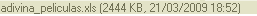
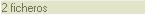

La "Barra de Estado" es un pequeño espacio usado para mostrar información relevante al fichero seleccionado, el número total de ficheros en la carpeta, etc... Se puede encontrar al final de la interfaz de CKFinder
Si un fichero es seleccionado en CKFinder, la barra de estado mostrará información detallada acerca de ese fichero en particular, contendrá el nombre del fichero, su tamaño y la fecha de su última modificación, por ejemplo:

Si por el contrario ningún fichero está seleccionado, se mostrará el número total de ficheros en la carpeta actual. Por ejemplo:
